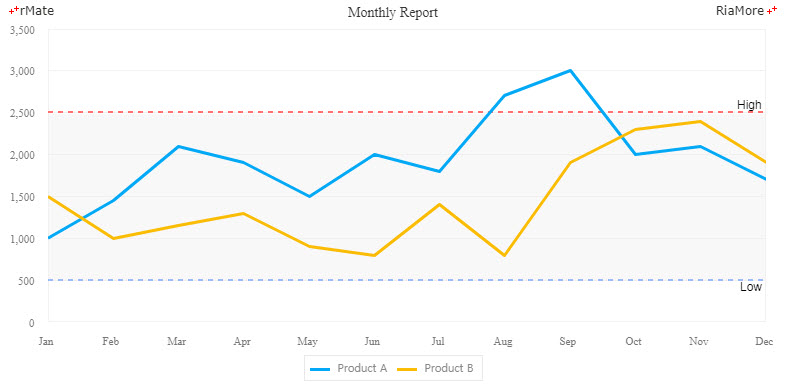
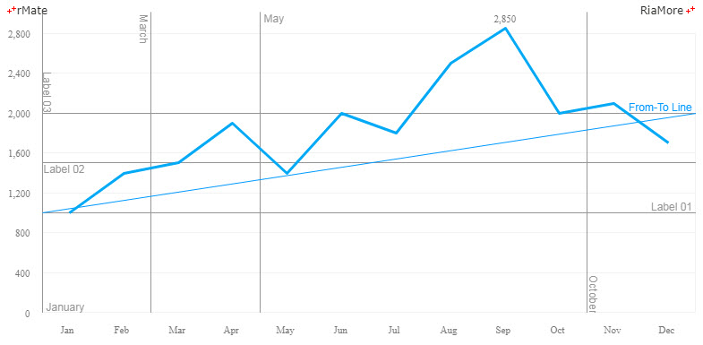
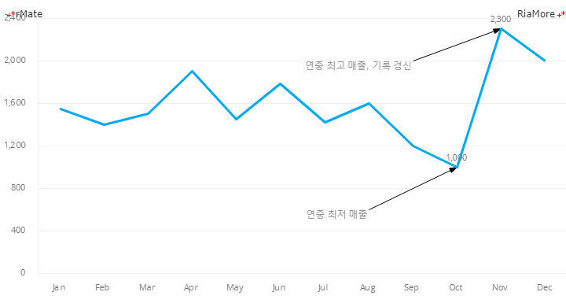

선긋기
차트의 배경에 직선을 표시할 수 있습니다.
이러한 작업은 <backgroundElements> 속성에 <AxisMarker> 노드를 정의하고 <AxisMarker> 노드의 <lines> 속성에
<AxisLine> 노드를 설정함으로써 가능합니다.
다음은 <AxisLine> 노드의 주요 속성들을 설명한 표입니다.
| 속성명 |
유효값 (*: 기본값) |
설명 |
| dashLinePattern |
숫자
기본값: 5
|
lineStyle 속성값이 “dashLine” 일 경우, 점선의 길이를 지정합니다.
|
| endValue |
숫자
|
선이 끝나는 지점의 값을 지정합니다.
value 속성값이 지정되어 있으면 이 값은 무시됩니다.
|
| horizontal |
true(*), false
|
표시되는 선이 수평선인지 여부를 설정합니다.
|
| label |
텍스트
|
선에 표시될 레이블을 지정합니다.
|
| lineStyle |
dashLine, normal(*)
|
선의 유형을 지정합니다.
|
| startValue |
숫자
|
선이 시작되는 지점의 값을 지정합니다.
value 속성값이 지정되어 있으면 이 값은 무시됩니다.
|
| stroke |
<Stroke>
|
선의 색의 스타일을 지정합니다.
|
| value |
숫자
|
선이 표시되는 지점의 값을 지정합니다.
value 속성값이 지정되면 startValue, endValue 속성은 무시됩니다.
|
다음은 차트에 하한선과 상한선을 점선으로 표시하는 예제입니다.
<backgroundElements>
<GridLines/>
<AxisMarker>
<lines>
<AxisLine value="2500" lineStyle="dashLine" label="High">
<stroke>
<Stroke color="#FF7171" weight="2"/>
</stroke>
</AxisLine>
<AxisLine value="500" lineStyle="dashLine" label="Low" labelUpDown="down">
<stroke>
<Stroke color="#6799FF" weight="2"/>
</stroke>
</AxisLine>
</lines>
<ranges>
<AxisRange startValue="500" endValue="2500">
<fill>
<SolidColor color="#eeeeee" alpha="0.4"/>
</fill>
</AxisRange>
</ranges>
</AxisMarker>
</backgroundElements>

See the CodePen 알메이트 차트 - 차트에 선긋기
다음은 차트에 수직선, 수평선 그리고 대각선을 함께 표시한 예제입니다.
<backgroundElements>
<GridLines/>
<AxisMarker>
<lines>
<AxisLine value="1000" label="Label 01" stroke="{stroke1}" labelUpDown="up" color="#969596"/>
<AxisLine value="1500" label="Label 02" stroke="{stroke1}" labelAlign="left" labelUpDown="down" color="#969596"/>
<AxisLine value="2000" label="Label 03" stroke="{stroke1}" labelUpDown="up" labelAlign="left" labelRotation="90" color="#969596"/>
<AxisLine value="Jan" label="January" stroke="{stroke1}" color="#969596" labelUpDown="down" labelAlign="right" linePosition="left" horizontal="false"/>
<AxisLine value="Mar" label="March" stroke="{stroke1}" color="#969596" labelUpDown="down" labelRotation="90" labelAlign="left" linePosition="left" horizontal="false"/>
<AxisLine value="May" label="May" stroke="{stroke1}" color="#969596" labelUpDown="down" labelAlign="left" linePosition="left" horizontal="false"/>
<AxisLine value="Oct" label="October" stroke="{stroke1}" color="#969596" labelUpDown="up" labelRotation="90" linePosition="right" horizontal="false"/>
<AxisLine startValue="1000" endValue="2000" label="From-To Line" color="#0099FF" labelAlign="right" labelUpDown="up">
<stroke>
<Stroke color="#0099FF" weight="1"/>
</stroke>
</AxisLine>
</lines>
</AxisMarker>
</backgroundElements>

See the CodePen 알메이트 차트 - 차트에 수직선, 수평선, 대각선 표시
화살표 선 긋기
<AxisLine> 노드의 enableArrowHead 값을 “true” 로 설정하면 화살표 선을 표시할 수 있습니다.
다음 표는 <AxisLine> 노드에서 화살표를 표시하는데 필요한 속성들에 대한 설명입니다.
| 속성명 |
유효값 (*: 기본값) |
설명 |
| arrowHeadLocation |
start, end(*)
|
선의 시작과 끝 중에서 화살표를 표시할 위치를 지정합니다.
|
| arrowHeadType |
open(*), close
|
화살표 머리의 유형을 설정합니다.
|
| arrowLength |
숫자
기본값: 10
|
화살표 머리의 길이를 지정합니다
|
| enableArrowHead |
true, false(*)
|
선에 화살표를 표시할지 여부를 지정합니다.
|
다음은 차트에 화살표 선을 표시한 예제입니다.
<backgroundElements>
<GridLines/>
<AxisMarker>
<lines>
<AxisLine horizontal="false" startValue="Sep" endValue="Nov" verticalStartValue="2000" verticalEndValue="2300" label="연중 최고 매출, 기록 경신" stroke="{stroke1}" labelUpDown="up" labelAlign="right" labelYOffset="10" color="#969596" enableArrowHead="true" arrowHeadType="close"/>
<AxisLine horizontal="false" startValue="Aug" endValue="Oct" verticalStartValue="600" verticalEndValue="1000" label="연중 최저 매출" stroke="{stroke1}" labelUpDown="up" labelAlign="right" labelYOffset="10" color="#969596" enableArrowHead="true" arrowHeadType="close"/>
</lines>
</AxisMarker>
</backgroundElements>

See the CodePen 알메이트 차트 - 차트에 화살표 선 표시